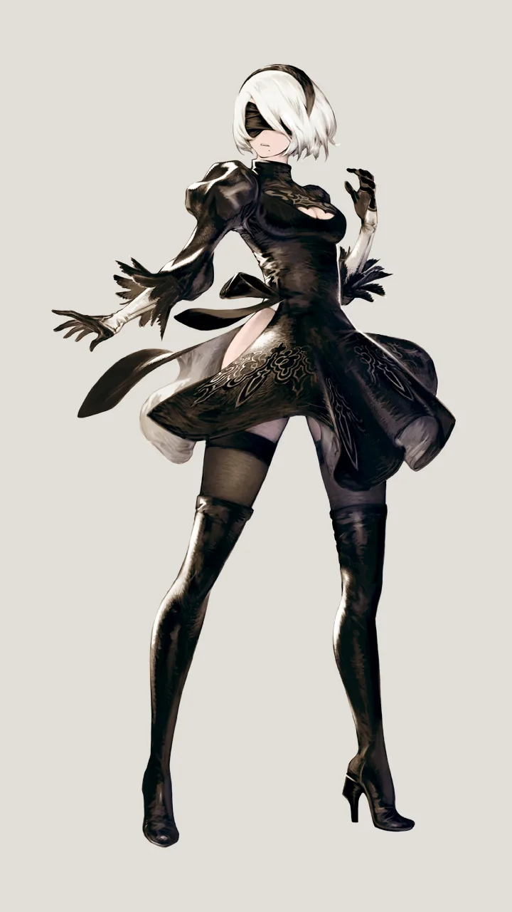
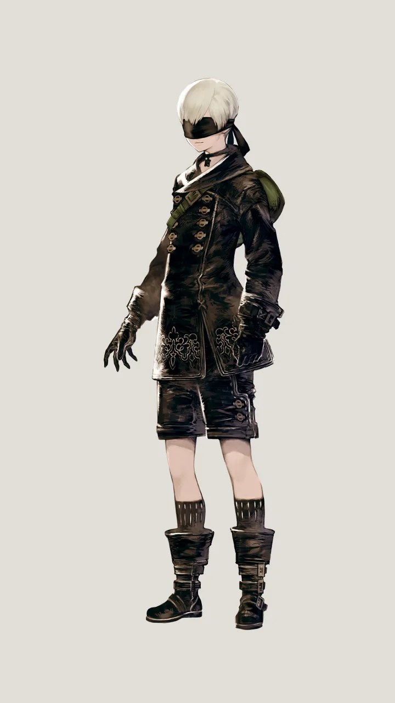
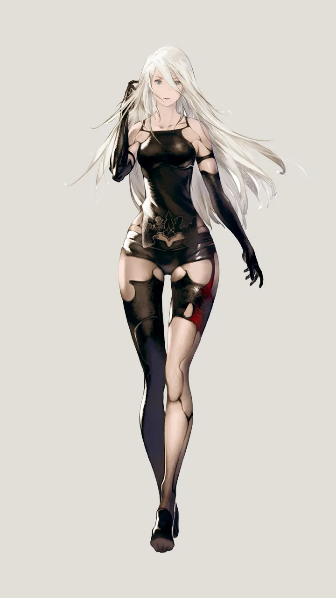
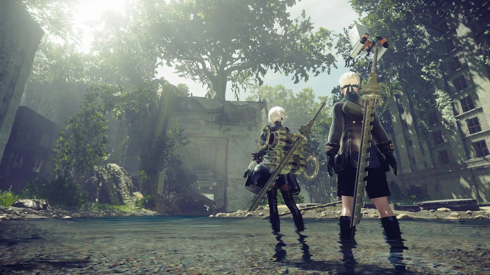

Em um futuro distópico, a humanidade foi forçada a abandonar a Terra após uma invasão alienígena. Agora, androides de combate são a última linha de defesa, lutando contra as máquinas hostis que dominam o planeta. Entre eles, destaca-se 2B, uma androide de combate habilidosa e determinada, cuja missão é recuperar a Terra para a humanidade. Auxiliada por seu parceiro 9S, um scanner androide curioso e perspicaz, eles mergulham em um mundo devastado, encontrando ruínas da civilização humana e confrontando segredos sombrios. Ao longo de sua jornada, 2B e 9S descobrem que a linha entre máquinas e humanidade é mais tênue do que imaginavam, questionando sua própria existência e propósito. Enquanto exploram temas de identidade, livre-arbítrio e moralidade, são confrontados por escolhas difíceis e consequências imprevisíveis. Paralelamente, a enigmática A2, uma android renegada, emerge com seus próprios objetivos, desafiando as estruturas estabelecidas e lançando uma nova luz sobre os eventos do passado. Em meio a batalhas épicas e uma narrativa emocionalmente carregada, "NieR: Automata" oferece uma experiência profunda e reflexiva, onde cada escolha e encontro molda o destino dos protagonistas e do mundo que habitam. Conforme a trama se desenrola, os jogadores são levados a questionar não apenas as motivações dos personagens, mas também suas próprias percepções sobre o que significa ser humano em um cenário pós-apocalíptico repleto de desafios e descobertas surpreendentes.

Uma android de combate, 2B é uma personagem calma, determinada e altamente habilidosa na batalha. Ela é designada para missões perigosas e tem uma relação próxima com 9S, embora ela se mantenha profissional e focada em sua missão. 2B é icônica por seu design elegante e sua postura estoica, escondendo emoções profundas e conflitos internos.

Um scanner android, 9S é curioso, perspicaz e possui habilidades técnicas excepcionais. Ele tem uma natureza mais emotiva do que 2B e está constantemente buscando entender melhor o mundo ao seu redor, muitas vezes questionando as ordens e o propósito de sua existência. Sua relação com 2B é central na história, e suas interações exploram temas de confiança, lealdade e descoberta pessoal.

Uma android renegada, A2 é apresentada como uma personagem misteriosa e determinada, com uma atitude mais solitária e rebelde em comparação com 2B e 9S. Ela possui uma história de fundo complexa e está em uma jornada de redenção e descoberta de sua própria identidade. A2 traz uma nova perspectiva à narrativa, desafiando as convenções estabelecidas e oferecendo uma visão única sobre os temas explorados no jogo.
O soundtrack de "NieR: Automata" é conhecido por sua variedade e qualidade excepcional, com composições emocionantes que complementam perfeitamente a atmosfera do jogo. Algumas das músicas mais notáveis incluem:
Essas são apenas algumas das muitas músicas incríveis que compõem o soundtrack de "NieR: Automata", criado pelo renomado compositor Keiichi Okabe e sua equipe. A trilha sonora contribui significativamente para a experiência única e memorável do jogo, evocando uma ampla gama de emoções nos jogadores ao longo de sua jornada.
"NieR: Automata" recebeu aclamação universal pela crítica especializada, com uma pontuação de 88/100 para a versão de PlayStation 4 e 84/100 para a versão de Microsoft Windows no Metacritic. A história intrigante e não convencional de Yoko Taro foi elogiada por sua cativante narrativa e múltiplos finais, que incentivaram os jogadores a explorarem mais o jogo. A jogabilidade foi considerada uma melhoria em relação aos trabalhos anteriores de Yoko, com combates variados e criativos, embora alguns críticos tenham observado certa repetitividade. A trilha sonora foi unanimemente elogiada por sua variedade e capacidade de aprimorar as diferentes seções do jogo. No entanto, problemas técnicos, como travamentos e questões gráficas, foram apontados como pontos negativos, especialmente na versão para PC.
| Publicação | Nota |
|---|---|
| Destructoid | 9/10 |
| Electronic Gaming Monthly | 8,5/10 |
| Famitsu | 39/40 |
| Game Informer | 7,75/10 |
| Game Revolution | 4 de 5 estrelas |
| GameSpot | 9/10 |
| GamesRadar | 4.5 de 5 estrelas |
| IGN | 8,9/10 |
| PC Gamer | 79/100 |
| Polygon | 8/10 |
| VideoGamer.com | 9/10 |
